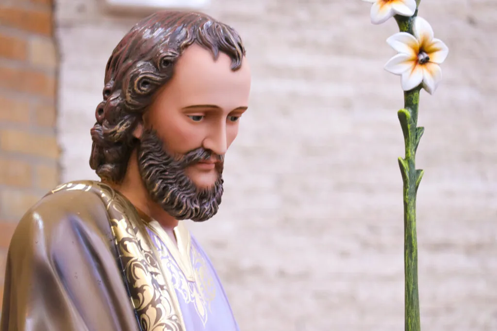

Nosso Padroeiro
Homem justo, trabalhador e exemplo de pai — protetor da Sagrada Família e patrono de toda a Igreja.
Quem foi São José?
São José foi um homem justo, trabalhador e exemplo de pai. Foi escolhido por Deus como o esposo da Virgem Maria, pai adotivo de Jesus, protetor da Sagrada Família e patrono de toda a Igreja de Cristo. Sua simplicidade e fidelidade fizeram dele o protetor escolhido para Maria e para o próprio Jesus, bem como para todos nós.
São José era um carpinteiro e iria se casar com Maria, mas a virgem descobriu que estava grávida pelo poder do Espírito Santo. Com isso, José resolveu abandoná-la em segredo para que não sofresse as consequências que a humanidade impunha. Foi então que “O Anjo do Senhor manifestou-lhe, em sonho, dizendo: José, filho de Davi, não temas receber Maria como tua Mulher, pois o que nela foi gerado vem do Espírito Santo.” Mt 1,20.
O dia de São José é comemorado no dia 19 de março, uma bela festa para os católicos de todo o mundo. Atualmente São José é tido como Padroeiro da Igreja (declarado pelo Papa Pio IX), Advogado dos Lares Cristãos (Papa Leão XIII), além de ser considerado o protetor dos operários.
O significado do nome José: é “aquele que acrescenta”, “acréscimo do Senhor” ou “Deus multiplica”. O nome José tem origem no nome hebraico Yosef, que significa “Ele acrescentará”, referindo-se a Deus.

Terço de São José
Oferecimento
Ofereço este terço em louvor e glória de Jesus, Maria e José, para que sejam a minha luz, guia, proteção, defesa, amparo e fortaleza em todos os meus trabalhos, alegrias, agonias e tribulações. Pelo Nome de Jesus e pela glória de Maria, imploro de Vós, glorioso São José, que alcanceis a graça que desejo (pedir a graça). Advogai a minha causa, falai em meu favor, no céu e na terra, alegrai a minha alma, para honra e glória de Jesus e Maria. Amém.
Creio em Deus Pai…
Pai nosso…
Ave Maria… (3x)
Glória ao Pai…
Em lugar do Pai Nosso:
Meu glorioso São José, nas vossas maiores aflições e tribulações o anjo não nos valeu?
Valei-nos, São José!
Em lugar da Ave Maria:
São José, valei-nos!
Glória ao Pai, ao Filho e ao Espírito Santo. Como era no princípio, agora e sempre. Amém.
Oração pelas intenções do Santo Papa:
Pai nosso…
Ave Maria…
Glória ao Pai…
Oração a São José
Oh! glorioso São José, a quem foi dado o poder de tornar possíveis as coisas humanamente impossíveis, vinde em nosso auxílio nas dificuldades em que nos achamos.
Tomai sob a vossa proteção a causa que vos confiamos, para que tenha uma solução favorável. Oh! Pai muito amado, em vós depositamos toda nossa confiança.
Que ninguém possa jamais dizer que vos invocamos em vão.
Já que tudo podeis junto a Jesus e Maria, mostrai-nos que vossa bondade é igual ao vosso poder. São José, a quem Deus confiou o cuidado da mais santa família que jamais houve, sede o pai e protetor da nossa e impetrai-nos a graça de vivermos e morrermos no amor de Jesus e Maria.
São José do Perpétuo Socorro, rogai por nós que recorremos a vós.
Ladainha de São José
Senhor, tende piedade de nós.
Senhor, tende piedade de nós. (TODOS)
Jesus Cristo, tende piedade de nós.
Jesus Cristo, tende piedade de nós.
Senhor, tende piedade de nós.
Senhor, tende piedade de nós.
Jesus Cristo, ouvi-nos.
Jesus Cristo, atendei-nos. (TODOS)
Deus, Pai dos Céus, tende piedade de nós. (TODOS)
Deus Filho, Redentor do mundo,
Deus Espírito Santo,
Santíssima Trindade, que sois um só Deus,
Santa Maria, rogai por nós. (TODOS)
São José,
Ilustre filho de David,
Luz dos Patriarcas,
Esposo da Mãe de Deus,
Casto guarda da Virgem,
Sustentador do Filho de Deus,
Zeloso defensor de Jesus Cristo,
Chefe da Sagrada Família,
José justíssimo,
José castíssimo,
José prudentíssimo,
José fortíssimo,
José obedientíssimo,
José fidelíssimo,
Espelho de paciência,
Amante da pobreza,
Modelo dos operários,
Honra da vida de família,
Guarda das virgens,
Sustentáculo das famílias,
Alívio dos miseráveis,
Esperança dos doentes,
Patrono dos moribundos,
Terror dos demônios,
Protetor da Santa Igreja,
Cordeiro de Deus, que tirais os pecados do mundo, perdoai-nos, Senhor.
Cordeiro de Deus, que tirais os pecados do mundo, atendei-nos, Senhor.
Cordeiro de Deus, que tirais os pecados do mundo, tende piedade de nós.
Ele constituiu-o senhor da sua casa.
E fê-lo príncipe de todos os seus bens.
Oremos: Ó Deus, que por inefável providência Vos dignastes escolher a São José por esposo de vossa Mãe Santíssima; concedei-nos, Vo-lo pedimos, que mereçamos ter por intercessor no Céu aquele que veneramos na Terra como protetor. Vós que viveis e reinais por todos os séculos dos séculos. Amém.
Oração a São José
A vós, São José, recorremos na nossa tribulação, e depois de ter implorado o auxílio da vossa Santíssima Esposa, cheios de confiança solicitamos o vosso patrocínio.
Por esse laço sagrado de caridade que vos uniu à Virgem Imaculada Mãe de Deus, e pelo amor paternal que tivestes para com o Menino Jesus, ardentemente suplicamos que lanceis um olhar benigno à herança que Jesus Cristo conquistou com o seu Sangue, e nos assistais, nas nossas necessidades, com o vosso auxílio e poder.
Protegei, oh! guarda providente da Divina Família, a raça escolhida de Jesus Cristo; afastai para longe de nós, oh! Pai amantíssimo, a peste do erro e do vício; assisti-nos do alto do céu, oh! nosso fortíssimo sustentáculo, na luta contra o poder das trevas.
E, assim como outrora salvastes da morte a vida ameaçada do Menino Jesus, assim também defendei agora a Santa Igreja de Deus contra as ciladas dos seus inimigos e contra toda a adversidade.
Amparai a cada um de nós com vosso constante patrocínio, a fim de que, a vosso exemplo e sustentados com o vosso auxílio, possamos viver virtuosamente, piedosamente morrer e obter no Céu a eterna bem-aventurança. Amém!